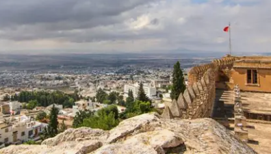
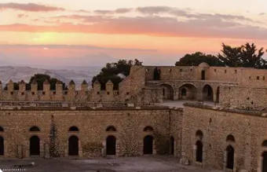
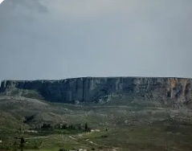
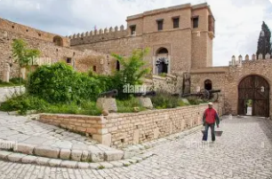

La Citadelle de l'Histoire

Le Kef est un gouvernorat situé à l'extrême nord-ouest de la Tunisie, à la frontière avec l'Algérie. C'est une région montagneuse au climat continental, perchée à 800 mètres d'altitude.
La ville du Kef, chef-lieu du gouvernorat, est l'une des plus anciennes villes de Tunisie. Appelée autrefois Sicca Veneria, elle est dominée par une imposante kasbah ottomane et offre un panorama exceptionnel sur les plaines environnantes.
Le gouvernorat se distingue par son patrimoine historique millénaire, son architecture traditionnelle préservée, ses sites archéologiques numides et romains, et son authenticité qui en fait une destination culturelle majeure.
Imposante forteresse ottomane du XVIIe siècle dominant la ville à 1 000 m d'altitude, offrant une vue panoramique à 360° sur la région et l'Algérie voisine.
Ancienne Sicca Veneria numide puis romaine, ville sainte dédiée à Vénus. Riche patrimoine archéologique avec basilique, citernes et vestiges puniques.
Festival international de musique et de danses traditionnelles du Kef, célèbre événement culturel attirant des artistes de toute la Méditerranée chaque été.
Vieille ville préservée avec ses ruelles étroites, ses maisons traditionnelles, ses zaouïas et ses souks authentiques reflétant l'architecture hispano-maghrébine.

Forteresse byzantine puis ottomane construite sur un rocher stratégique. Elle abrite le musée régional des arts et traditions populaires. Vue spectaculaire sur la ville, les montagnes et les plaines jusqu'à l'Algérie.

Plateau rocheux spectaculaire culminant à 1 271 m, refuge légendaire du roi numide Jugurtha face aux Romains. Site naturel et historique exceptionnel avec citernes antiques et vue panoramique.

Vieille ville pittoresque avec ses ruelles pavées en escaliers, ses maisons blanchies à la chaux, ses portes sculptées et ses mosquées historiques. Architecture traditionnelle authentique préservée.